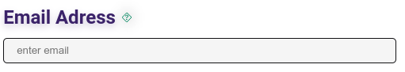
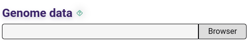
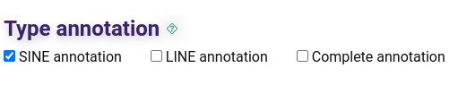

AnnoTEP documentation - Annotation Transposable Elements for Plants
Welcome to the AnnoTEP documentation.
The AnnoTEP framework has been developed to facilitate the annotation of transposable elements in plant genomes and to provide essential support to the scientific community involved in research centered on these elements.
Transposable elements (TEs) are mobile genetic elements that have the ability to move around the genome, inserting themselves into different regions. Also referred to as "jumping genes", mobile genetic elements (MGEs), they constitute a category of genetic sequences that play a fundamental role in the evolution and genomic dynamics of organisms. Their intrinsic ability to move within the genome, either by RNA-mediated retrotransposition (Class I or Retrotransposons), using the "copy and paste" mechanism, or by direct DNA transposition (Class II or Transposons), using the "cut and paste" or "copy and paste" mechanism, gives these elements a remarkable influence on evolutionary processes and genomic plasticity.
The platform covers various characteristics of TEs and presents the results in the form of detailed reports, informative graphs and phylogenetic trees. It provides visual resources to enrich the analysis and allow a more complete understanding of the evolutionary dynamics of these genomic sequences.
How to use the platform - local server with interface
This section details the steps required to send data for annotation of transposable elements on the local server. Similar to the web server, here you will also enter your data in order to be informed of the annotation's progress.
Staying informed about the annotation process
To start the annotation process and obtain information on the progress of your work, you need to provide your e-mail address in the panel.

Entering input data
The ideal data input accepted by the AnnoTEP platform is FASTA format files containing the chromosomes of plant genomes. The "Genome Data" panel allows you to select the file on your machine.

Annotation systems
Before submitting your annotations, you need to choose the type of annotation you want to make, by default the SINE annotation is already selected, so confirm your selections before submitting your data.

The annotation system allows you to make four different types of annotations:
Selecting SINE Annotation: This option exclusively analyzes the SINE elements present in the plant genome, generating libraries containing specific SINE sequences.
Selecting LINE Annotation: This option exclusively analyzes the LINE elements present in the plant genome, generating libraries containing specific LINE sequences.
Selecting SINE and LINE Annotation (Together): This choice leads to the joint analysis of SINEs and LINEs elements in the plant genome, generating libraries containing sequences from both categories.
Selecting Complete Annotation: This option performs a comprehensive analysis of the SINEs and LINEs elements, including an in-depth analysis using libraries of both elements. In addition to the conventional outputs, such as tables of TRIM, LARD, TR_GAG, BARE-2, MITES, Helitron, Gypsy Family and Copia Family elements, age graphs are generated for the Gypsy and Copia families, as well as a phylogenetic tree.
Sending data
Once you have entered all the necessary data, you can click on the "submit" button to start analyzing your genome. After submitting, you will receive a confirmation email and when the work is completed without any errors, you will receive a second email informing you that the annotation has been completed.
Results
At the end of the annotation, the results will be available in your Home folder, in the "results" folder.
Inside the results folder you will find the following files:
SINE folder - contains the data generated from the SINE annotation or full annotation.
LINE-results folder - contains the data generated through LINE annotation or complete annotation.
Complete-analysis folder - obtained through the complete annotation, in this folder, in addition to the graphs, trees and tables generated, it brings elements masked by means of $genome-Softmasked.fa and the new structural annotations SINEs and LINEs, available in the folder $genome.EDTA.raw. ($genome = name of the genome worked on). Look for SINE.intact.fa, SINE.intact.gff3, LINE.intact.fa and LINE.intact.gff3, plus a final analysis of LINEs elements available in $genome.TElib.fa.lask